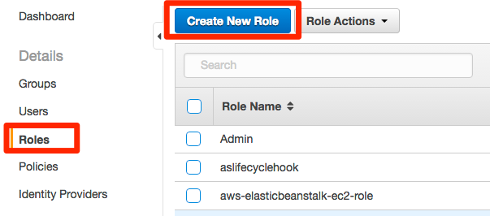
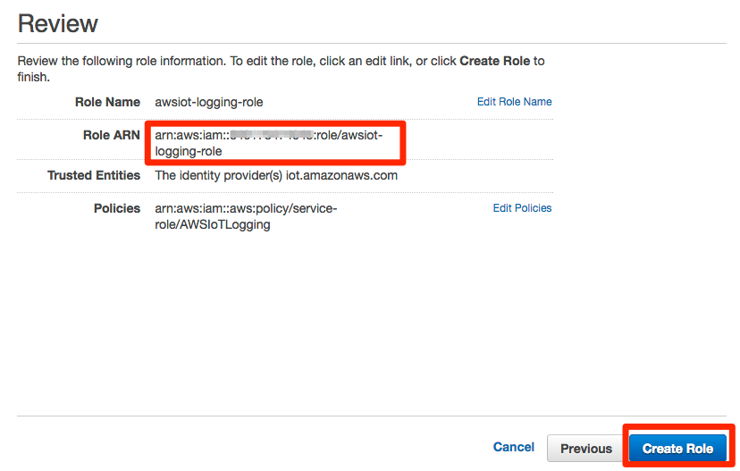
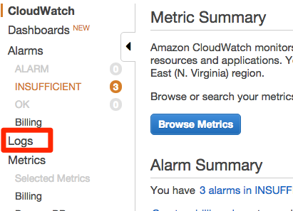
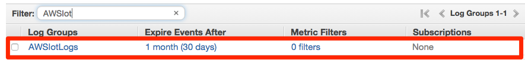
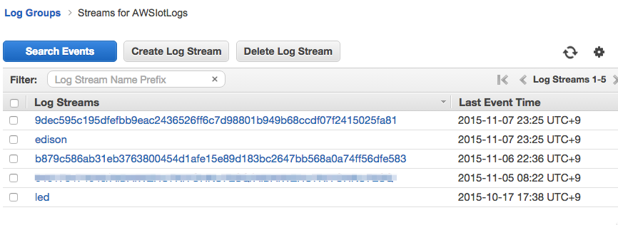

7. その他の設定（オプション）¶
7.1. CloudWatch Logsの設定¶
AWS IoTのログはCloudWatch Logsで取得可能です。 詳細な手順はこちらに掲載されています。
http://docs.aws.amazon.com/ja_jp/iot/latest/developerguide/cloud-watch-logs.html
まず、メニュー画面から”Identity & Access Management”をクリックし、IAMの設定画面を表示します。画面左のメニューから”Roles”をクリックし、[Create New Role]をクリックします。
“Role Name”にロール名を入力し、[Next Step]をクリックします。

“Select Role Type”で”AWS IoT”の[Select]をクリックします。

“Attach Policy”で”AWSIoTLogging”のビルトインポリシーにチェックを入れ、[Next Step]をクリックします。

内容を確認します。次の手順のコマンドラインでARNが必要になるため、”Role ARN”の文字列をコピーしておきます。問題なければ[Create Role]をクリックしてください。
以下のaws cliコマンドを実行し、aws iotに作成したロールを割当てます。(以下のコマンドをコピーするとダブルクオーテーションが文字化けする場合がありますのでご注意ください。）
aws iot set-logging-options --region ap-northeast-1 --logging-options-payload roleArn=”arn:aws:iam::<your-aws-account-num>:role/AWSIoTLogging”,logLevel=”INFO”
マネージメントコンソールのサービスメニューから”CloudWatch”をクリックし、左メニューの[Logs]をクリックします。
一覧の”Log Groups”から”AWSIotLogs”が表示されていることを確認します。
AWSIotLogsをクリックし、”Log Streams”にログのエントリが存在することを確認します。それぞれのLog Streamsをクリックすることで、ログを閲覧することができます。
7.2. 証明書の作成¶
本ハンズオンではあらかじめプライベートキーとCSR(Certificate Signing Request)を作成し、そちらを元に証明書を取得しています。プライベート鍵とCSRを作成する手順は以下のとおりです。
以下のopensslコマンドでプライベートキーを作成します。
$ openssl genrsa -out privatekey.pem 2048
Generating RSA private key, 2048 bit long modulus
................................................................................+++
..........+++e is 65537 (0x10001)
次に、作成したプライベートキーを元にCSRを作成します。
$ openssl req -new -key privatekey.pem -out cert.csr
You are about to be asked to enter information that will be incorporated
into your certificate request.
What you are about to enter is what is called a Distinguished Name or a DN.
There are quite a few fields but you can leave some blank
For some fields there will be a default value,
If you enter '.', the field will be left blank.
-----
Country Name (2 letter code) [AU]:JP
State or Province Name (full name) [Some-State]:Tokyo
Locality Name (eg, city) []:Meguro
Organization Name (eg, company) [Internet Widgits Pty Ltd]:Amazon Web Services Japan K.K.
Organizational Unit Name (eg, section) []:
Common Name (e.g. server FQDN or YOUR name) []:
Email Address []:
Please enter the following 'extra' attributes
to be sent with your certificate request
A challenge password []:
An optional company name []: